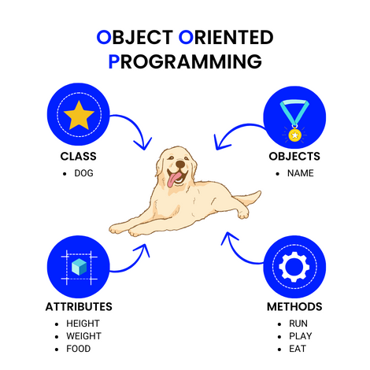
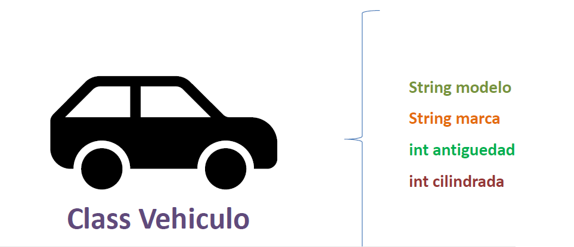
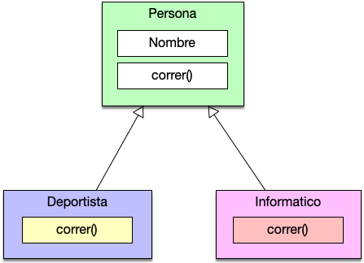
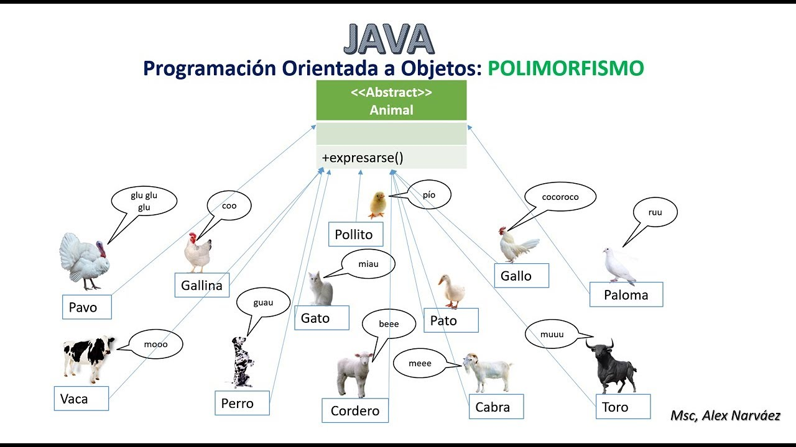
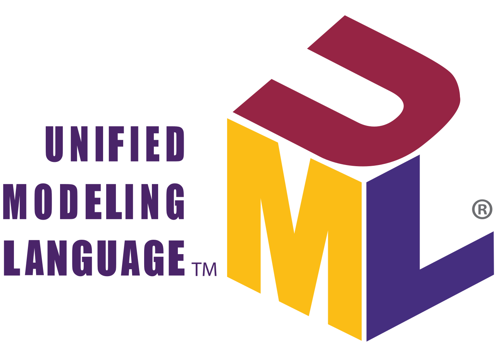
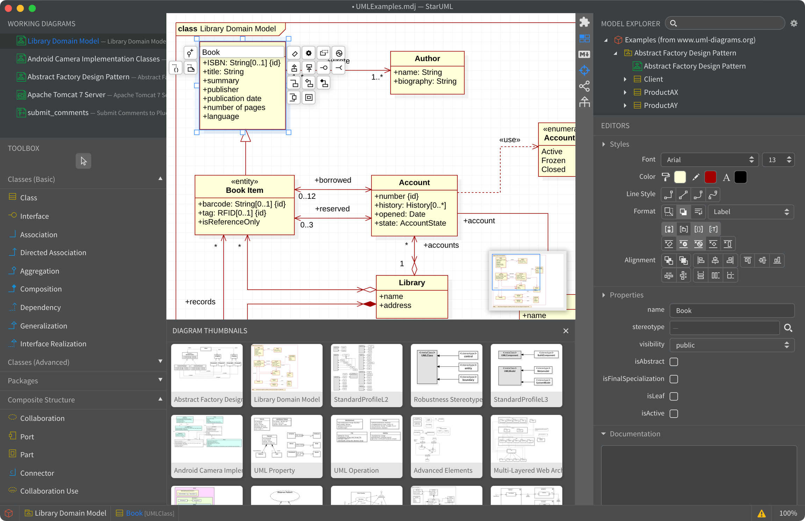

¿Qué es el modelado orientado a objetos?
Es un enfoque de diseño de software que utiliza objetos para representar entidades del mundo real o abstracto, facilitando la comprensión, el mantenimiento y la evolución de los sistemas informáticos.
Se basa en conceptos como clases, objetos, herencia, polimorfismo y encapsulación, y se apoya en herramientas de modelado como UML para visualizar la estructura y el comportamiento del software.

1. Fundamentos de la Programación Orientada a Objetos (POO)
La Programación Orientada a Objetos es un paradigma que organiza el software en torno a objetos que representan entidades del mundo real o abstracto. Cada objeto combina datos (atributos) y comportamiento (métodos), favoreciendo la modularidad, la reutilización y el mantenimiento del código.

1.1.1. Clases
Una clase es una plantilla que define las características comunes de un conjunto de objetos. Especifica qué datos tendrá el objeto (atributos) y qué acciones podrá realizar (métodos).

public class Coche {
String marca;
String modelo;
String color;
public void arrancar() {
System.out.println("El coche se ha arrancado.");
}
}1.1.2. Objetos
Un objeto es una instancia concreta de una clase. Cada objeto tiene identidad
propia y valores
específicos para sus atributos, aunque provenga de la misma clase que otros objetos.
Coche miCoche = new Coche();
miCoche.marca = "Toyota";
miCoche.encender();1.1.3. Herencia

La herencia permite crear nuevas clases a partir de otras existentes. La subclase hereda atributos y métodos de la superclase, pudiendo ampliarlos o modificarlos. Esto facilita la reutilización de código y la organización jerárquica.
public class Mascota {
private String nombre;
private int edad;
public void sonido() {
System.out.println("La mascota hace un sonido.");
}
}
public class Perro extends Mascota {
private String raza;
@Override
public void sonido() {
System.out.println("El perro ladra.");
}
}1.1.4. Polimorfismo
El polimorfismo permite que un mismo método se comporte de forma distinta según el objeto que lo ejecute. Aumenta la flexibilidad y extensibilidad del sistema.

- Sobrecarga: métodos con el mismo nombre y distinta firma.
- Redefinición: una subclase cambia la implementación heredada.
//Definición de clases
public class Vehiculo {
public void descripcion() {
System.out.println("Es un vehículo.");
}
}
public class Coche extends Vehiculo {
@Override
public void descripcion() {
System.out.println("Es un coche.");
}
}
public class Moto extends Vehiculo {
@Override
public void descripcion() {
System.out.println("Es una moto.");
}
}
//Uso del polimorfismo: al ser ambos objetos de tipo Vehiculo, pueden usar el mismo método
//descripcion() pero con comportamientos diferentes.
public class Main {
public static void main(String[] args) {
Vehiculo miVehiculo = new Coche();
miVehiculo.descripcion(); // Imprime: Es un coche.
miVehiculo = new Moto();
miVehiculo.descripcion(); // Imprime: Es una moto.
}
}
2. Uso de Herramientas de Modelado UML
UML es un lenguaje estándar de modelado visual que permite representar la estructura y el comportamiento de sistemas orientados a objetos. El diagrama de clases es uno de los más utilizados en las fases de análisis y diseño.

2.1.1. ¿Qué es un diagrama de clases?
Un diagrama de clases representa gráficamente las clases de un sistema, sus atributos, métodos y las relaciones entre ellas. Permite visualizar la estructura estática del software y sirve como base para la generación de código.

2.1.2. Elementos de un diagrama de clases
Cada clase se representa mediante un rectángulo dividido en tres partes:
- + Público: Accesible desde cualquier otra clase.
- - Privado: Accesible solo desde la propia clase.
- # Protegido: Accesible desde la propia clase y sus subclases.
Además, se utilizan símbolos para indicar la visibilidad de los atributos y métodos, y diferentes tipos de líneas para representar las relaciones entre clases.
Ejemplo de representación de una herencia:

2.1.3. Relaciones entre clases
Los diagramas de clases muestran cómo se relacionan las clases entre sí, lo que permite comprender la arquitectura del sistema.

- Asociación: una clase utiliza a otra. Se representa con una línea continua.
- Agregación: una clase contiene a otra, pero ambas pueden existir independientemente. Se representa con una línea con un rombo vacío.
- Composición: una clase contiene a otra, y la existencia de la parte depende del todo. Se representa con una línea con un rombo relleno.
- Herencia: una clase es un tipo especializado de otra. Se representa con una línea con una flecha abierta.
- Dependencia: una clase depende de otra para funcionar. Se representa con una línea discontinua con una flecha.
2.1.4. Interpretación de diagramas de clases
Interpretar un diagrama implica identificar las clases principales, analizar sus relaciones, comprender sus responsabilidades y evaluar la cohesión y el acoplamiento del diseño.
- Identificación de clases: reconocer las entidades clave del sistema.
- Análisis de relaciones: entender cómo interactúan las clases entre sí.
- Responsabilidades: determinar qué hace cada clase y cómo contribuye al sistema.
- Cohesión y acoplamiento: evaluar la calidad del diseño, buscando alta cohesión y bajo acoplamiento.
3. Generación de Código desde Diagramas
Las herramientas de modelado UML permiten generar automáticamente código fuente a partir de diagramas de clases (ingeniería directa) y también obtener diagramas desde código existente (ingeniería inversa).
Heramientas:
- Enterprise Architect: Soporta UML 2.5 y permite generar código en múltiples lenguajes.
- Visual Paradigm: Ofrece una amplia gama de diagramas UML y generación de código.
- StarUML: Es una herramienta de modelado ligera y fácil de usar, con soporte para generación de código.
3.1.2. Herramientas de modelado (StarUML)
StarUML es una herramienta de modelado UML que permite diseñar, analizar y generar código para sistemas orientados a objetos. Ofrece soporte para múltiples lenguajes de programación y facilita la colaboración entre equipos de desarrollo.

3.1.4. Buenas prácticas
La generación automática de código debe utilizarse como apoyo al diseño. Es fundamental modelar con rigor, revisar el código generado y completar manualmente la lógica de negocio.
- Modelado riguroso: Asegurarse de que los diagramas reflejen fielmente los requisitos y el diseño del sistema.
- Revisión del código generado: Verificar que el código generado sea correcto, eficiente y siga las mejores prácticas de programación.
- Complementar con lógica de negocio: Añadir manualmente la lógica específica del negocio que no puede ser representada en los diagramas.
- Iteración entre diseño y código: Utilizar la generación de código como parte de un proceso iterativo, donde el diseño se ajusta en función de las necesidades del desarrollo.
3.1.5. Ingeniería Directa e Inversa
La ingeniería directa permite generar código a partir de diagramas, mientras que la ingeniería inversa permite crear diagramas a partir de código existente. Ambas técnicas son útiles para mantener la sincronización entre el diseño y la implementación.
- Ingeniería Directa: Facilita la transición del diseño al desarrollo, permitiendo generar código estructurado y consistente con el modelo.
- Ingeniería Inversa: Ayuda a comprender sistemas existentes, permitiendo visualizar su estructura y relaciones a través de diagramas.
- Sincronización: Es importante mantener la coherencia entre los diagramas y el código, actualizando ambos a medida que el sistema evoluciona.